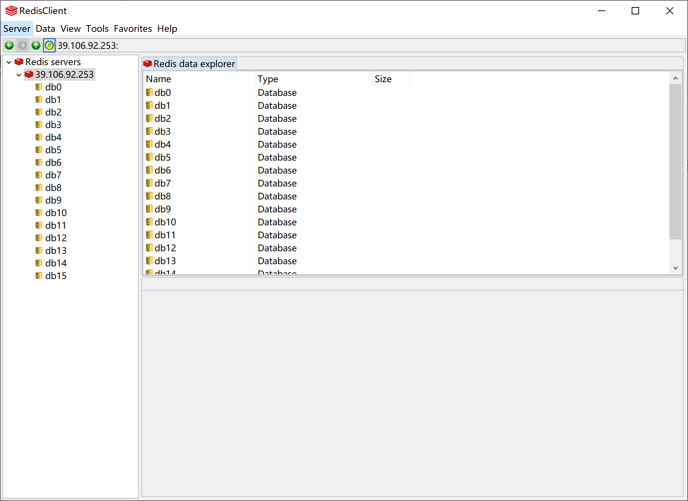
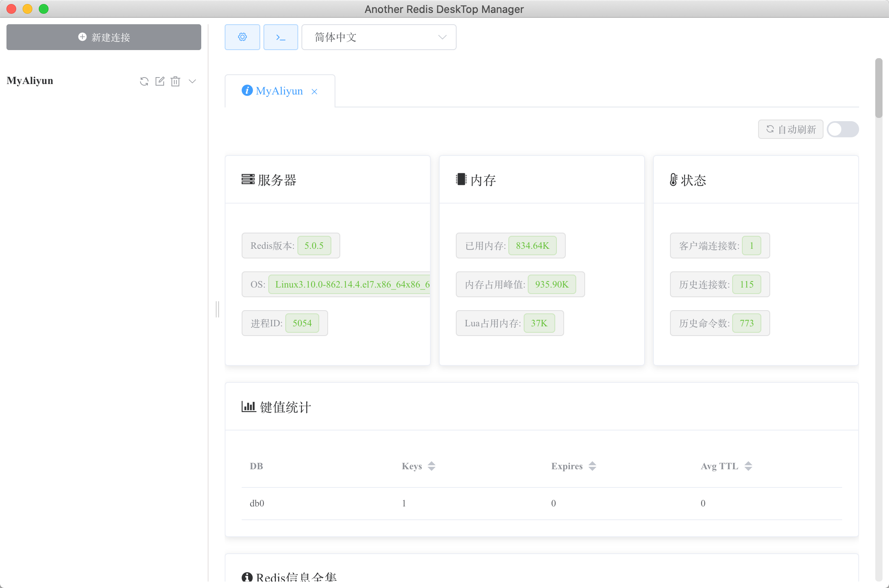

- 01 Redis 是如何执行的.md.html
- 02 Redis 快速搭建与使用.md.html
- 03 Redis 持久化——RDB.md.html
- 04 Redis 持久化——AOF.md.html
- 05 Redis 持久化——混合持久化.md.html
- 06 字符串使用与内部实现原理.md.html
- 07 附录：更多字符串操作命令.md.html
- 08 字典使用与内部实现原理.md.html
- 09 附录：更多字典操作命令.md.html
- 10 列表使用与内部实现原理.md.html
- 11 附录：更多列表操作命令.md.html
- 12 集合使用与内部实现原理.md.html
- 13 附录：更多集合操作命令.md.html
- 14 有序集合使用与内部实现原理.md.html
- 15 附录：更多有序集合操作命令.md.html
- 16 Redis 事务深入解析.md.html
- 17 Redis 键值过期操作.md.html
- 18 Redis 过期策略与源码分析.md.html
- 19 Redis 管道技术——Pipeline.md.html
- 20 查询附近的人——GEO.md.html
- 21 游标迭代器（过滤器）——Scan.md.html
- 22 优秀的基数统计算法——HyperLogLog.md.html
- 23 内存淘汰机制与算法.md.html
- 24 消息队列——发布订阅模式.md.html
- 25 消息队列的其他实现方式.md.html
- 26 消息队列终极解决方案——Stream（上）.md.html
- 27 消息队列终极解决方案——Stream（下）.md.html
- 28 实战：分布式锁详解与代码.md.html
- 29 实战：布隆过滤器安装与使用及原理分析.md.html
- 30 完整案例：实现延迟队列的两种方法.md.html
- 31 实战：定时任务案例.md.html
- 32 实战：RediSearch 高性能的全文搜索引擎.md.html
- 33 实战：Redis 性能测试.md.html
- 34 实战：Redis 慢查询.md.html
- 35 实战：Redis 性能优化方案.md.html
- 36 实战：Redis 主从同步.md.html
- 37 实战：Redis哨兵模式（上）.md.html
- 38 实战：Redis 哨兵模式（下）.md.html
- 39 实战：Redis 集群模式（上）.md.html
- 40 实战：Redis 集群模式（下）.md.html
- 41 案例：Redis 问题汇总和相关解决方案.md.html
- 42 技能学习指南.md.html
- 43 加餐：Redis 的可视化管理工具.md.html
43 加餐：Redis 的可视化管理工具
因为 Redis 官方只提供了命令行版的 Redis 客户端 redis-cli，以至于我们在使用的时候会比较麻烦，通常要输入一堆命令，而且命令行版的客户端看起来也不够直观，基于以上两个原因我们需要找一个可视化的 Redis 客户端，下面是我这些年使用过的一些 Redis 可视化客户端，分享给大家。
RedisClient
是否收费：免费。
项目介绍：Java 编写的 Redis 连接客户端，功能丰富，并且是免费的。
支持平台：Windows。
项目地址：https://github.com/caoxinyu/RedisClient
使用截图：

Redis Desktop Manager
是否收费：收费。
项目介绍：一款基于 Qt5 的跨平台 Redis 桌面管理软件。
支持平台：Windows、macOS、Linux。
项目地址：https://github.com/uglide/RedisDesktopManager
使用截图：
RedisStudio
是否收费：免费。
项目介绍：一款 C++ 编写的 Redis 管理工具，比较老，好久没更新了。
支持平台：Windows。
项目地址：https://github.com/cinience/RedisStudio
使用截图：
AnotherRedisDesktopManager
是否收费：免费。
项目介绍：一款基于 Node.js 开发的 Redis 桌面管理器，它的特点就是相对来说比较稳定，在数据量比较大的时候不会崩溃。
支持平台：Windows、macOS、Linux。
项目地址：https://github.com/qishibo/AnotherRedisDesktopManager
使用截图：

其他 Redis 可视化工具
- Medis：https://github.com/luin/medis
- phpRedisAdmin：https://github.com/ErikDubbelboer/phpRedisAdmin
- PyRedisAdmin：https://github.com/JoneXiong/PyRedisAdmin
- Go-Redis：https://github.com/alphazero/Go-Redis
- RedisLive：https://github.com/nkrode/RedisLive
- TreeDMS ：http://www.treesoft.cn/dms.html
- RedisPlus：https://gitee.com/MaxBill/RedisPlus
总结
我本人使用过上面介绍的前 4 个客户端，最近一直在使用的是 AnotherRedisDesktopManager 和 Redis Desktop Manager，其中 Redis Desktop Manager 是花了 ￥98 买的 macOS 版，买之后就后悔了，原因之一就是界面并不美观，完全没有付费软件应有的精致感，建议大家使用免费版的 AnotherRedisDesktopManager。